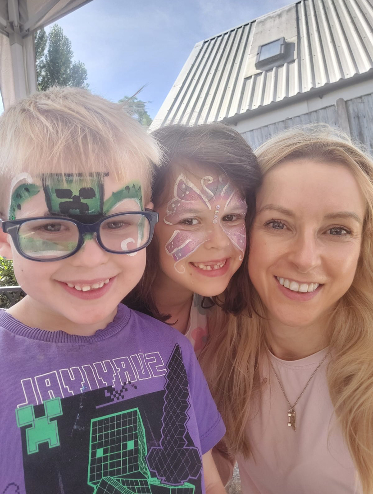
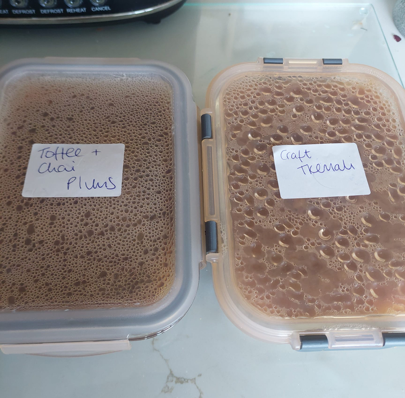
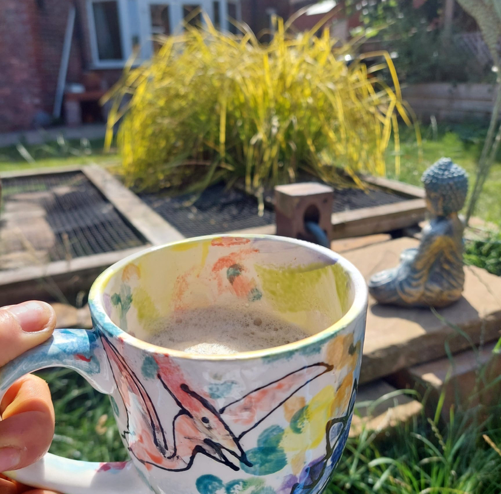
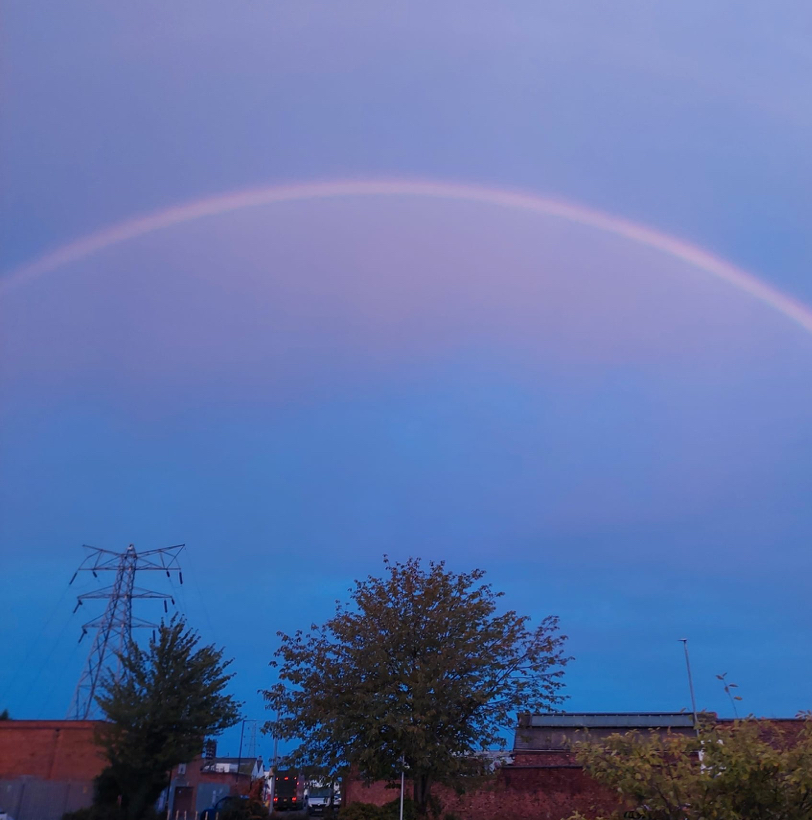

AUGUST 2026
Some were shared. Some were quiet.
Some simply caught your attention enough to stay with you.

Unhurried afternoon connection.

Generosity held in glass.

Morning sun, solitary pause.
Across the month your attention landed on very different things. Time with the people closest to you. A coffee in the garden. Plums prepared and put away - a little taste of summer, and a[...]
Not forgetting those moments where being noticed by others seemed to stay with you - a reminder that appreciation can sometimes be felt deeply by the way it catches us by surprise.
There were also Moments that invited a pause in a different way. A stop sign prompted questions about stopping, appreciating and overthinking. Taking time to listen revealed just how much[...]
Placed alongside one another, these Moments don’t need to tell one single story. They do show the variety of things that caught your attention when you took a moment to notice.
Perhaps that is what they have in common: each one was something you chose to pause for before moving on.

A quiet signal to refrain from overthinking.

Dusk arc over rooftops.
you kept finding reasons to turn towards what mattered.
A pause in the sun.
Sometimes you stopped.
Sometimes you simply noticed what was already there.
to amount to anything more than that.